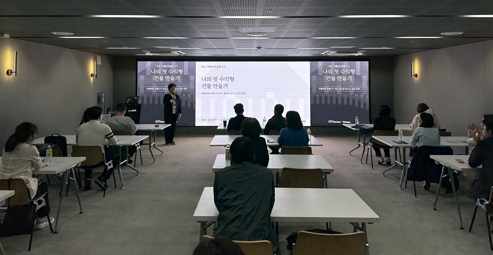

Project / Community Program
‘나도 디벨로퍼클럽’ 1기 프로그램 운영
I Am a Developer Club, Cohort 1 Program Operations

‘나도 디벨로퍼클럽’은 예비 건물주가 건축 프로젝트의 기획부터 설계, 시공, 운영까지 실무 흐름을 입체적으로 이해하도록 돕는 교육 프로그램이다.
'I Am a Developer Club' is an education program designed to help aspiring building owners understand the full practical process of an architectural project, from planning and design to construction and operation.
프로젝트 개요
‘나도 디벨로퍼클럽’은 공간디벨로퍼 플랫그라운드와 건축·공간 미디어 브리크가 공동 기획한 예비 건물주 대상 실무 교육 프로그램이다. 부동산을 이미 보유하고 있거나 보유를 준비 중인 사람이 수익성과 차별성을 갖춘 건축 프로젝트를 직접 이해하고 실행할 수 있도록 돕는 데 목적이 있다.
주요 참가 대상은 리모델링이 필요한 건물을 가진 건물주, 상업 개발용 토지를 소유하거나 검토 중인 사람, 브랜드 공간 운영을 통해 새로운 수익 구조를 만들고자 하는 예비 건물주였다. 프로그램은 건물과 토지를 단순 자산이 아니라 기획과 운영의 관점에서 다시 읽어내는 실전형 커리큘럼으로 구성되었다.
1기 과정은 2025년 10월부터 11월까지 4주간 총 8회로 운영되었으며, 강남역과 뚝섬역 인근 공간을 오가며 진행되었다. 도시, 건축, 부동산, 금융, 트렌드, 라이프스타일 분야 전문가 강의와 실전 워크숍, 1:1 사이트 컨설팅, 네트워킹 파티를 통해 참가자가 자신의 프로젝트를 보다 구체적인 언어로 다듬을 수 있도록 설계했다.
이 프로그램의 핵심은 건축을 설계나 시공의 개별 단계로 분절하지 않고, 기획과 수익 모델, 공간 브랜딩, 운영 방식까지 연결된 하나의 개발 프로세스로 이해하게 만든다는 점이다. 1기에서는 총 16명의 수료자가 배출되었고, 각자가 가진 자산과 지역적 맥락을 바탕으로 현실적인 실행 가능성을 검토하는 학습 구조를 만들었다.
운영 관점에서 이 프로젝트는 교육 프로그램을 단순 진행하는 수준을 넘어, 예비 건물주 커뮤니티를 형성하고 서로의 사례를 공유할 수 있는 장을 만드는 작업이기도 했다. 강의와 컨설팅, 네트워킹을 유기적으로 묶어 참여자의 문제의식과 실행 의지를 동시에 끌어올리는 것이 중요했다.
'I Am a Developer Club' is a practical education program for aspiring building owners, jointly organized by space developer Flat Ground and architecture and space media outlet Brique. It was designed to help people who already own, or are preparing to own, real estate understand and carry out architectural projects that are both distinctive and financially viable.
The participants included building owners with properties in need of renovation, people considering land for commercial development, and aspiring owners who wanted to generate revenue through branded spaces. Rather than treating buildings and land as passive assets, the program framed them as subjects of planning, development, and long-term operation.
The first cohort ran across four weeks from October to November 2025, with a total of eight sessions held near Gangnam Station and Ttukseom Station in Seoul. The curriculum combined expert lectures on cities, architecture, real estate, finance, trends, and lifestyle with hands-on workshops, one-on-one site consulting, and a networking party so that participants could refine their own projects in concrete terms.
A key strength of the program was its integrated view of development. Rather than isolating design or construction as separate stages, it connected planning, revenue strategy, spatial branding, and operations into one practical process. The first cohort graduated 16 participants, each of whom explored the real feasibility of development ideas grounded in their own assets and local contexts.
From an operational perspective, the project was also about building a peer community for aspiring building owners. The program structure linked lectures, consulting, and networking so that participants could exchange cases, sharpen their questions, and grow their confidence to move from interest to execution.
State. 완료 Completed
Role. 운영 Operation
Client. 브리크 Brique, 플랫그라운드 Flat Ground